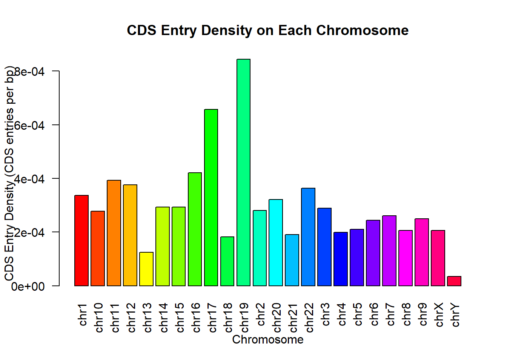

1 + 1[1] 2Quarto enables you to weave together content and executable code into a finished document. To learn more about Quarto see https://quarto.org.
When you click the Render button a document will be generated that includes both content and the output of embedded code. You can embed code like this:
1 + 1[1] 2You can add options to executable code like this
[1] 4The echo: false option disables the printing of code (only output is displayed).
(20%) Visualize using bar plot (function barplot()) the total number of genes on each chromosome (1-22, X, Y). Report the chromosomes with the min and max number of genes.
# import GFF3 table
library(stringr)
file <- "E:/Language/R/gencode.v44.primary_assembly.annotation.gff3"
GFF <- read.table(file, header = FALSE, sep = "\t")
colnames(GFF) <- c("seqid", "source", "type", "start", "end",
"score", "strand", "phase", "attributes")
rownames(GFF) <- 1:nrow(GFF)# Visualize and calculate minimum and maximum values
chromosome_counts <- table(GFF$seqid)
# Select only data for chr1 to chr22, X, and Y chromosomes
selected_chromosomes <- c("chr1", "chr2", "chr3", "chr4", "chr5", "chr6", "chr7", "chr8", "chr9", "chr10",
"chr11", "chr12", "chr13", "chr14", "chr15", "chr16", "chr17", "chr18", "chr19",
"chr20", "chr21", "chr22", "chrX", "chrY")
chromosome_counts <- chromosome_counts[selected_chromosomes]
# Create a larger bar plot to visualize gene counts
options(repr.plot.width = 10, repr.plot.height = 4) # Adjust the plot size as needed
barplot(chromosome_counts,
names.arg = names(chromosome_counts),
main = "Total Number of Genes on Each Selected Chromosome",
xlab = "Chromosome",
ylab = "Number of Genes",
col = "blue",
panel.first = grid(),
las = 2)# Calculate the chromosomes with the minimum and maximum number of genes
min_gene_chromosome <- names(chromosome_counts)[which.min(chromosome_counts)]
max_gene_chromosome <- names(chromosome_counts)[which.max(chromosome_counts)]
cat("Chromosome with the min number of genes:", min_gene_chromosome, "\n")Chromosome with the min number of genes: chrY cat("Chromosome with the max number of genes:", max_gene_chromosome, "\n")Chromosome with the max number of genes: chr1 (20%) Visualize the density of genes on each chromosome. Density is defined by the total number of genes divided by the length of the chromosome. You can use the maximum end coordinate value to approximate the length of a chromosome. Point out the chromosomes with the minimum and maximum gene density, respectively.
# Create a subset of GFF data for chr1-22, X, and Y chromosomes
selected_chromosomes <- c("chr1", "chr2", "chr3", "chr4", "chr5", "chr6", "chr7", "chr8", "chr9", "chr10",
"chr11", "chr12", "chr13", "chr14", "chr15", "chr16", "chr17", "chr18", "chr19",
"chr20", "chr21", "chr22", "chrX", "chrY")
selected_GFF <- GFF[GFF$seqid %in% selected_chromosomes, ]
# Calculate gene density and Visualize and calculate min and max values
chromosome_lengths <- aggregate(selected_GFF$end, list(seqid = selected_GFF$seqid), max)
colnames(chromosome_lengths) <- c("seqid", "chromosome_length")
chromosome_gene_counts <- aggregate(selected_GFF$seqid, list(seqid = selected_GFF$seqid), length)
colnames(chromosome_gene_counts) <- c("seqid", "num_genes")
chromosome_gene_density <- merge(chromosome_lengths, chromosome_gene_counts, by = "seqid")
chromosome_gene_density$gene_density <- chromosome_gene_density$num_genes / chromosome_gene_density$chromosome_length
# Create a bar plot to visualize gene density
barplot(chromosome_gene_density$gene_density,
names.arg = chromosome_gene_density$seqid,
col = rainbow(nrow(chromosome_gene_density)), # Assign colors
xlab = "Chromosome",
ylab = "Gene Density",
main = "Gene Density on Each Selected Chromosome",
las = 2) # Identify chromosomes with min and max gene density
min_density_chromosome <- chromosome_gene_density$seqid[which.min(chromosome_gene_density$gene_density)]
max_density_chromosome <- chromosome_gene_density$seqid[which.max(chromosome_gene_density$gene_density)]
cat("Chromosome with the min gene density:", min_density_chromosome, "\n")Chromosome with the min gene density: chrY cat("Chromosome with the max gene density:", max_density_chromosome, "\n")Chromosome with the max gene density: chr19 (20%) Repeat 1 and 2 for transcripts.
#### 3.1 Repeat 1
# Filter GFF data for selected chromosomes and transcript type
selected_GFF <- GFF[GFF$seqid %in% selected_chromosomes & GFF$type == "transcript", ]
# Calculate the number of transcripts for each chromosome
chromosome_transcript_counts <- table(selected_GFF$seqid)
# Create a larger bar plot to visualize transcript counts
options(repr.plot.width = 10, repr.plot.height = 4) # Adjust the plot size as needed
barplot(chromosome_transcript_counts,
names.arg = names(chromosome_transcript_counts),
main = "Total Number of Transcripts on Each Chromosome",
xlab = "Chromosome",
ylab = "Transcript Counts",
col = "blue",
panel.first=grid(),
las = 3.5) # Calculate the minimum and maximum
min_transcript_chromosome <- names(chromosome_transcript_counts)[which.min(chromosome_transcript_counts)]
max_transcript_chromosome <- names(chromosome_transcript_counts)[which.max(chromosome_transcript_counts)]
cat("Chromosome with the minimum transcript counts:", min_transcript_chromosome, "\n")Chromosome with the minimum transcript counts: chrY cat("Chromosome with the maximum transcript counts:", max_transcript_chromosome, "\n")Chromosome with the maximum transcript counts: chr1 # Calculate transcript density and visualize, and calculate min and max values
# Filter GFF to include only chr1-22 and X,Y chromosomes
chromosomes_of_interest <- c("chr1", "chr2", "chr3", "chr4", "chr5", "chr6", "chr7", "chr8", "chr9", "chr10", "chr11", "chr12", "chr13", "chr14", "chr15", "chr16", "chr17", "chr18", "chr19", "chr20", "chr21", "chr22", "chrX", "chrY")
GFF_filtered <- GFF[GFF$seqid %in% chromosomes_of_interest, ]
# Calculate transcript density and Visualize, and calculate min and max values
chromosome_lengths <- aggregate(GFF_filtered$end[GFF_filtered$type == "transcript"], list(seqid = GFF_filtered$seqid[GFF_filtered$type == "transcript"]), max)
colnames(chromosome_lengths) <- c("seqid", "chromosome_length")
chromosome_transcript_counts <- aggregate(GFF_filtered$seqid[GFF_filtered$type == "transcript"], list(seqid = GFF_filtered$seqid[GFF_filtered$type == "transcript"]), length)
colnames(chromosome_transcript_counts) <- c("seqid", "num_transcripts")
chromosome_transcript_density <- merge(chromosome_lengths, chromosome_transcript_counts, by = "seqid")
chromosome_transcript_density$transcript_density <- chromosome_transcript_density$num_transcripts / chromosome_transcript_density$chromosome_length
# Create a bar plot to visualize transcript density with rotated labels
barplot(chromosome_transcript_density$transcript_density,
names.arg = chromosome_transcript_density$seqid,
col = rainbow(nrow(chromosome_transcript_density)), # Assign colors
xlab = "Chromosome",
ylab = "Transcript Density",
main = "Transcript Density on Each Chromosome",
las = 2) # Rotate x-axis labels 90 degrees# Identify chromosomes with min and max transcript density
min_transcript_density_chromosome <- chromosome_transcript_density$seqid[which.min(chromosome_transcript_density$transcript_density)]
max_transcript_density_chromosome <- chromosome_transcript_density$seqid[which.max(chromosome_transcript_density$transcript_density)]
cat("Chromosome with the min transcript density:", min_transcript_density_chromosome, "\n")Chromosome with the min transcript density: chrY cat("Chromosome with the max transcript density:", max_transcript_density_chromosome, "\n")Chromosome with the max transcript density: chr19 (20%) Repeat 1 and 2 for CDS.
# Filter GFF to include only chr1-22 and X,Y chromosomes
chromosomes_of_interest <- c("chr1", "chr2", "chr3", "chr4", "chr5", "chr6", "chr7", "chr8", "chr9", "chr10", "chr11", "chr12", "chr13", "chr14", "chr15", "chr16", "chr17", "chr18", "chr19", "chr20", "chr21", "chr22", "chrX", "chrY")
GFF_filtered <- GFF[GFF$seqid %in% chromosomes_of_interest, ]
# Filter the data for CDS entries
cds_entries <- GFF_filtered[GFF_filtered$type == "CDS", ]
# Calculate the total number of CDS entries on each chromosome
chromosome_cds_counts <- table(cds_entries$seqid)
# Define colors for the bars (you can customize these colors)
bar_colors <- rainbow(length(chromosome_cds_counts))
# Create a bar plot to visualize CDS entry counts with colors
barplot(chromosome_cds_counts,
names.arg = names(chromosome_cds_counts),
xlab = "Chromosome",
ylab = "Number of CDS Entries",
main = "CDS Entry Counts on Each Chromosome",
col = bar_colors,
las = 2) # Specify the colors for the bars# Calculate the chromosome with the minimum and maximum CDS entry counts
min_cds_chromosome <- names(chromosome_cds_counts)[which.min(chromosome_cds_counts)]
max_cds_chromosome <- names(chromosome_cds_counts)[which.max(chromosome_cds_counts)]
cat("Chromosome with the minimum CDS entry count:", min_cds_chromosome, "\n")Chromosome with the minimum CDS entry count: chrY cat("Chromosome with the maximum CDS entry count:", max_cds_chromosome, "\n")Chromosome with the maximum CDS entry count: chr1 # Filter GFF to include only chr1-22 and X,Y chromosomes
chromosomes_of_interest <- c("chr1", "chr2", "chr3", "chr4", "chr5", "chr6", "chr7", "chr8", "chr9", "chr10", "chr11", "chr12", "chr13", "chr14", "chr15", "chr16", "chr17", "chr18", "chr19", "chr20", "chr21", "chr22", "chrX", "chrY")
GFF_filtered <- GFF[GFF$seqid %in% chromosomes_of_interest, ]
# Filter the data for CDS entries
cds_entries <- GFF_filtered[GFF_filtered$type == "CDS", ]
# Calculate the total number of CDS entries on each chromosome
chromosome_cds_counts <- table(cds_entries$seqid)
# Calculate chromosome lengths
chromosome_lengths <- aggregate(cds_entries$end, list(seqid = cds_entries$seqid), max)
colnames(chromosome_lengths) <- c("seqid", "chromosome_length")
# Calculate CDS entry density (CDS entries per base pair)
chromosome_cds_density <- merge(chromosome_lengths, data.frame(seqid = names(chromosome_cds_counts), num_cds = as.vector(chromosome_cds_counts)), by = "seqid")
chromosome_cds_density$cds_density <- chromosome_cds_density$num_cds / chromosome_cds_density$chromosome_length
# Define colors for the bars (you can customize these colors)
bar_colors <- rainbow(length(chromosome_cds_density$seqid))
# Create a bar plot to visualize CDS entry density with colors
barplot(chromosome_cds_density$cds_density,
names.arg = chromosome_cds_density$seqid,
xlab = "Chromosome",
ylab = "CDS Entry Density (CDS entries per bp)",
main = "CDS Entry Density on Each Chromosome",
col = bar_colors,
las = 2) # Specify the colors for the bars
# Calculate the chromosome with the minimum and maximum CDS entry density
min_cds_density_chromosome <- chromosome_cds_density$seqid[which.min(chromosome_cds_density$cds_density)]
max_cds_density_chromosome <- chromosome_cds_density$seqid[which.max(chromosome_cds_density$cds_density)]
cat("Chromosome with the minimum CDS entry density:", min_cds_density_chromosome, "\n")Chromosome with the minimum CDS entry density: chrY cat("Chromosome with the maximum CDS entry density:", max_cds_density_chromosome, "\n")Chromosome with the maximum CDS entry density: chr19 total_intervals <- nrow(GFF)
cat("Total number of annotated intervals:", total_intervals, "\n")Total number of annotated intervals: 3422649 total_genes <- sum(GFF$type == "gene")
cat("Total number of genes in the human genome:", total_genes, "\n")Total number of genes in the human genome: 62754 pattern <- "gene_type=([^;]*)"
m <- regexec(pattern, GFF[, "attributes"])
gene_type <- sapply(
regmatches(GFF[, "attributes"], m),
function(e) {return(e[2])})
#
# Very slow alternative to extract gene names:
# d <- data.frame(regmatches(gff3[, "tag"], m))
# gene_names <- d[2, ]
GFF$gene_type2 = gene_typetotal_protein_coding <- sum(GFF$gene_type2 == "protein_coding" & GFF$type == "gene")
cat("Total number of protein_coding in the human genome:", total_protein_coding, "\n")Total number of protein_coding in the human genome: 20070 total_noncoding <- sum(GFF$gene_type2 != "protein_coding" & GFF$type == "gene")
cat("Total number of noncoding in the human genome:", total_noncoding, "\n")Total number of noncoding in the human genome: 42684